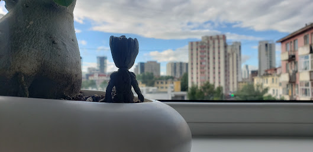
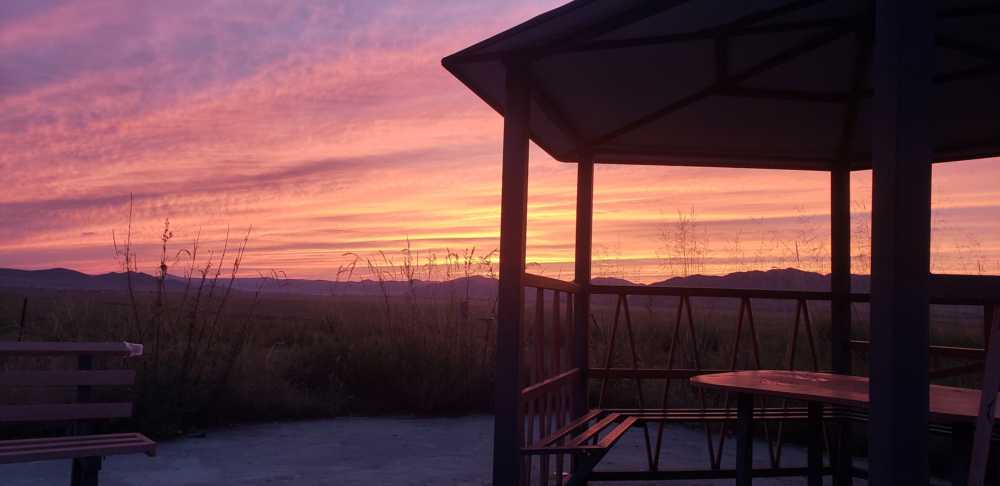
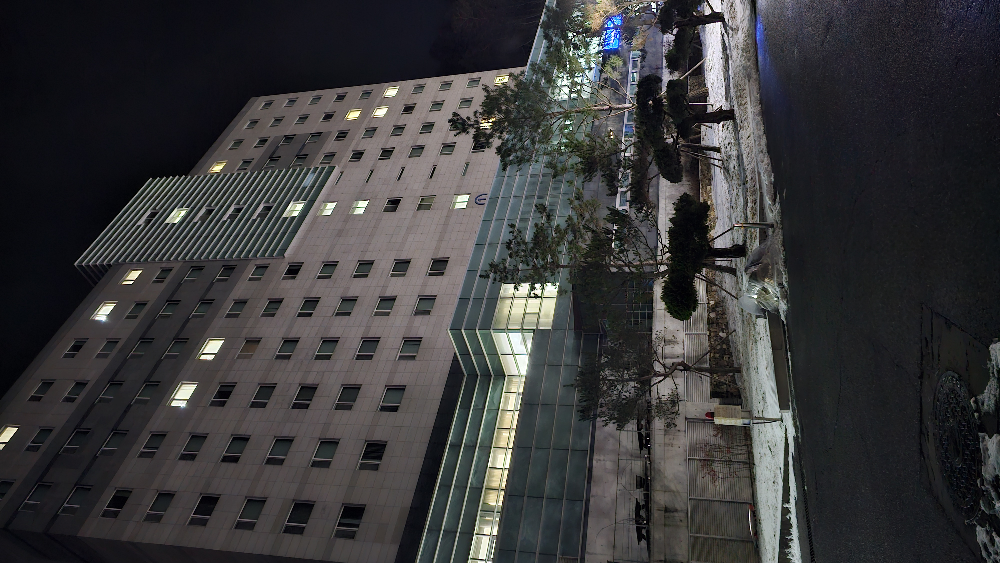

I made this so you can know me better, even from far away.
I’m someone who naturally notices small details. I tend to remember the way people talk, react, and express themselves because I think those small things show who someone really is. I’m usually calm and observant at first, but once I feel comfortable, I become more open and expressive. I like meaningful conversations more than small talk, and I try to understand people rather than judge them.
I spend a lot of time reflecting on things. I think about conversations, decisions, and how situations affect people emotionally. Sometimes I overthink, but it usually happens because I care deeply and want to understand things better. I try to learn from my mistakes and become more self-aware over time instead of ignoring my flaws.
I care a lot about honesty, effort, and emotional presence. I respect people who stay genuine and don’t pretend to be someone else just to fit in. I also appreciate consistency because small, steady actions mean more to me than big temporary gestures. I value peaceful and supportive energy in relationships and friendships. I still remember your promises about sending me photos on where you're going and stuff.
Lately, I’ve been learning how to be patient with myself. Some days feel confusing or overwhelming, especially when I’m far from familiar places and people. But I’m trying to grow slowly and become someone who is emotionally strong and reliable. I don’t want to rush becoming better — I want to build it properly, step by step.
Talking to you has made my days feel lighter and more balanced. Being able to share thoughts and moments with someone while being far away means more to me than I expected. You’ve helped me feel less alone during a time when I was trying to figure many things out, and I genuinely appreciate your presence in my life.


